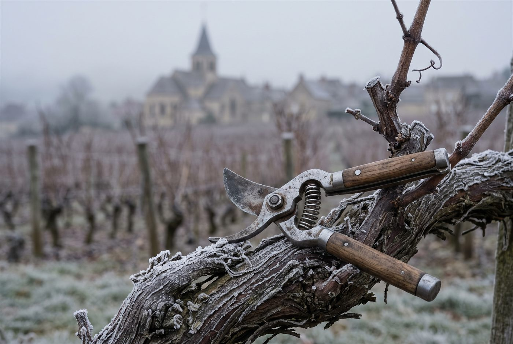

Les domaines · Côte de Nuits · Nuits-Saint-Georges
10
Nuits-Saint-Georges · Côte de Nuits
Domaine Jean-Marc Millot
Pureté du fruit, fraîcheur et texture soyeuse, dans le respect de chaque terroir.

Ambiance de Nuits-Saint-Georges
Installé à Nuits-Saint-Georges, le domaine cultive 8 hectares en Côte de Nuits, dont un parcellaire remarquable autour de Vosne-Romanée et de Flagey-Échezeaux avec trois grands crus. Alix Millot, qui a rejoint son père Jean-Marc en 2014, dirige aujourd'hui la maison et y mène des essais de vins nature et d'élevage en amphore. Le vignoble est conduit en agriculture biologique, sans certification officielle.
Blancs
- Cépage · AligotéCuvée nature en vendange entière, élevée en amphore, produite à 580 bouteilles sur 0,11 ha.
Rouges
- Cépage · Pinot noirLe plus prestigieux des grands crus du domaine, voisin du Clos de Vougeot.
- Cépage · Pinot noirGrand cru de Flagey-Échezeaux, dans la famille depuis la fin des années 1980.
- Cépage · Pinot noirParcelle vinifiée à part, sur le haut du grand cru.
- Cépage · Pinot noirParcelle du haut du Clos, dans le secteur du Grand Maupertui.
- Cépage · Pinot noirPremier cru de référence du domaine, entre Échézeaux et Romanée-Saint-Vivant.
- Cépage · Pinot noir
- Cépage · Pinot noirCuvée de vieilles vignes, appellation historique du domaine.
- Cépage · Pinot noir
- Cépage · Pinot noir
Ces cuvées vous parlent ?
Demander les disponibilités